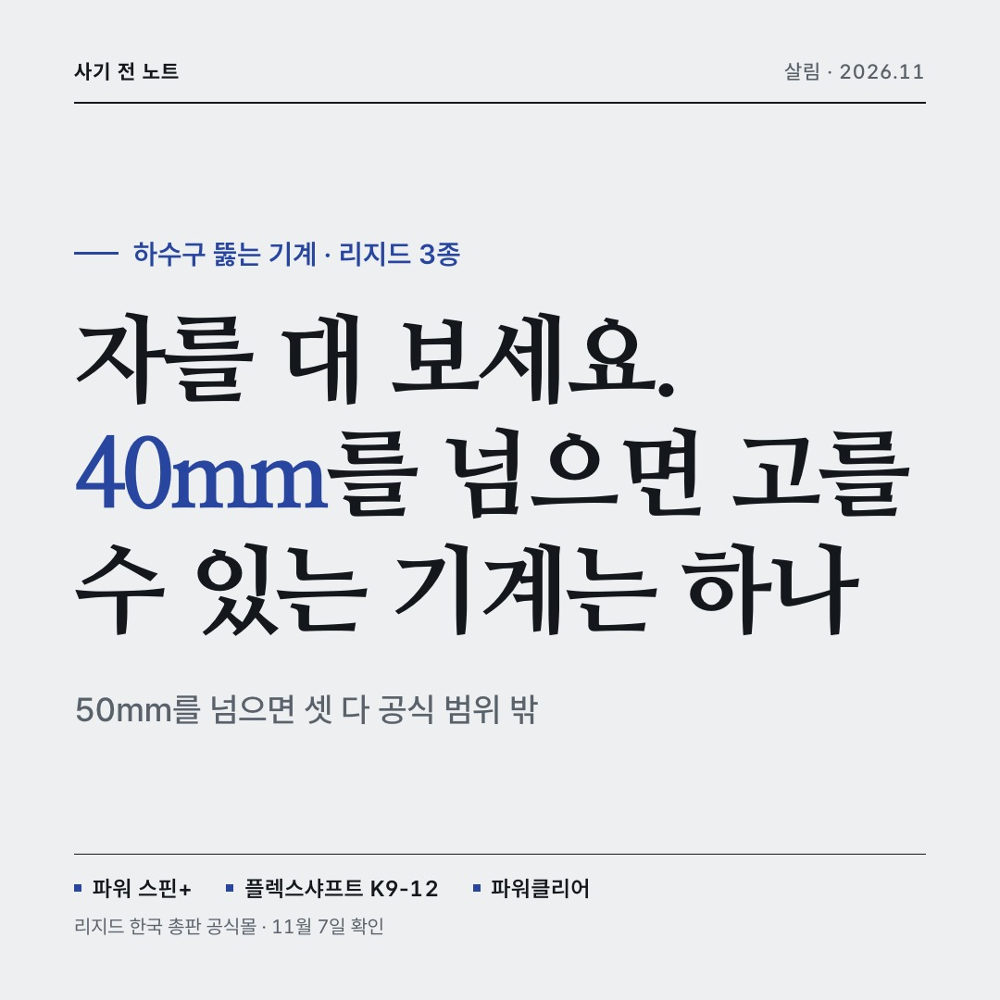

이 게시물은 쿠팡 파트너스 활동의 일환으로, 이에 따른 일정액의 수수료를 제공받습니다.
하수구 뚫는 기계, 배수관 40mm 넘으면 리지드 K9-12 하나
샤워가 끝났는데 바닥 물이 그대로 고여 있다. 하수구 뚫는 기계를 검색했다면, 장바구니보다 먼저 할 일이 있어요. 배수구 뚜껑을 열고 자를 대는 것.
리지드 세 제품의 공식 적용 배관은 생각보다 좁게 갈립니다. 40mm보다 굵은 관까지 들어가는 건 셋 중 하나뿐이고, 50mm가 넘으면 셋 다 범위 밖이에요.

자를 대고 나온 숫자가 40mm 이하라면
12~40mm라면 리지드 파워 스핀+가 범위 안입니다. 손잡이를 손으로 돌려도 되고 전동 드릴(옵션)을 끼워도 되는 방식이라, 집에 드릴이 없어도 시작할 수 있어요. 셋 중 가장 가벼운 2.0kg, 케이블은 6.3mm × 7.6m(한국 총판 공식몰 기준).
드릴 없이 손으로 돌릴 집, 파워 스핀+ 쿠팡 판매 페이지(11월 7일 129,000원) — 가격·구매처 보기
드릴을 끼울 생각이면 속도부터 보세요. 케이블이 최대 500RPM 드릴 작동용으로 설계돼 있고, 영문 매뉴얼은 500rpm보다 느리게 도는지 확인하라고, 유선 드릴은 쓰지 말라고 적었습니다. 공식 그림 설명에서 손잡이는 '다소 적은 이물질', 드릴은 '강력한 이물질'용.
41mm에서 50mm 사이라면
여기부터는 플렉스샤프트 K9-12만 남습니다. 공식 적용 배관이 1 1/4~2인치, 곧 32~50mm. 케이블은 6mm(나일론 피복 포함 9.5mm)에 약 9.14m라 깊은 곳까지 닿고, 무게는 3.8kg이에요. 11월 7일 쿠팡 상품평은 40개였고요.
대신 무선 드릴이 있어야 합니다. 그 드릴이 조건을 맞추는지가 두 번째 측정이에요.
- 속도: 표준 1800~2500RPM, 육각 8mm 부착(공식몰 상세)
- 척 10mm 이상, 조절 클러치, 누르는 동안만 돌고 잠금이 없는 스위치(제조사 영문 매뉴얼, 사본으로 확인)
- 안 되는 것: 임팩 드릴·해머 드릴·유선 드릴. 공식몰은 '오직 일반 충전드릴만 사용 가능'이라고 못 박아 뒀어요.

관이 40mm를 넘고 드릴이 맞는다면, K9-12 쿠팡 판매 페이지(11월 7일 380,000원) — 가격·구매처 보기
체인 노커가 관 벽까지 펼쳐져 막힌 부분을 없앤다는 설명은 회사 광고 문구라는 점은 기억해 두세요. 32mm보다 가는 관이면 K9-12는 오히려 범위 밖입니다.
50mm보다 굵게 나왔다면
비교한 세 제품 모두 공식 적용 범위 밖. 억지로 맞추기보다 다른 장비를 찾는 편이 맞겠죠.
세 번째 후보였던 파워클리어(19~40mm, 모터식 230V·0.5A·50Hz, 5.4kg, 케이블 9.14m)는 링크하지 않았어요. 국내 전기 인증(KC) 정보를 공식 상세와 제품안전정보센터 검색에서 찾지 못했고, 쿠팡 판매 페이지 글자에도 230V·KC 표기가 없었습니다. 11월 7일 상품평은 0개, 가격은 380,000원이었고요.
변기가 막힌 거라면 얘기가 달라집니다. 세 제품 공식몰 상세엔 변기 이야기가 없고, 파워 스핀+ 영문 매뉴얼은 변기에는 권하지 않았어요. 같은 한국 총판에 변기용 K-6P 토일렛 오거가 따로 있습니다.
주문 버튼 전에 판매자에게 물을 두 가지
K9-12 상자에 뭐가 들어 있는지. 공식 상세에 기본 구성이 없고 쿠팡 표기 포함 구성도 '본품'뿐이라, 드릴과 체인 노커가 함께 오는지 알 수 없어요. 공식몰엔 1.5인치·2인치 체인 노커가 추가 상품으로 따로 있습니다.
반품 배송비는 누가 내는지. 11월 7일 기준 두 상품 모두 로켓배송이 아닌 일반 판매자 상품이었어요. 쿠팡 표기 제조국(파워 스핀+ 미국, K9-12 중국)도 한국 총판 상품 페이지(멕시코, 미국)와 달라서, 상품 문의로 답을 받아 두면 마음이 편합니다.

파워 스핀+는 교체용 케이블(6.3mm × 7.6m)이 단품으로 있어요. 한국 총판 안내엔 제조·부품 문제는 조건을 충족하는 한 평생 무상 서비스, 오용·과용·자연적 마모는 제외라고 적혀 있는데, 해외 직구 상품도 같은 조건인지는 나와 있지 않습니다.
돌리기 전, 매뉴얼이 먼저 시키는 것
보안경과 장갑. 두 제품 제조사 영문 매뉴얼(제품 DB에 올라온 사본)은 독성·감염 물질이 의심되면 라텍스·고무장갑과 보호구를 쓰고, 끝난 뒤 손을 씻으라고 합니다. 케이블 끝이 배관 밖에 나온 채 돌리지 말 것, 케이블이 멈췄는데 스위치를 누른 채 두지 말 것, 서 있는 물 위에서 쓰지 말 것.
K9-12 매뉴얼은 유리·세라믹·도자기 배관과 기구 청소는 권하지 않았어요. 파워 스핀+는 욕조 배수구로 바로 넣지 말고 오버플로 판을 열어 넣으라고 하고요.

리지드 공식 사이트 원본은 열지 못했으니, 받은 제품 설명서로 한 번 더 맞춰 보세요. 이 글의 사양·주의 문구는 리지드 한국 총판대리점(에스티대흥) 공식몰과 리지드 영문 안내 페이지(11월 7일 확인), 가격·상품평 수는 같은 날 쿠팡 표시값이고, 세 기계 모두 제가 써 본 것은 아닙니다.
자 눈금 40에서 한 칸만 넘어가도 고를 수 있는 기계가 하나로 줄어든다는 것, 그게 이 글의 전부예요.
사양을 확인한 페이지
- 리지드 파워 스핀+ 한국 총판 공식몰: https://www.ridgidkorea.com/goods/goods_view.php?goodsNo=3626
- 리지드 파워클리어 한국 총판 공식몰: https://www.ridgidkorea.com/goods/goods_view.php?goodsNo=9128
- 리지드 플렉스샤프트 K9-12 한국 총판 공식몰: https://www.ridgidkorea.com/goods/goods_view.php?goodsNo=9109
- 리지드 영문 안내(K9-12): https://go.ridgid.emerson.com/Flexshaft_EN
- 변기용 K-6P 토일렛 오거: https://www.ridgidkorea.com/goods/goods_view.php?goodsNo=8588
#하수구뚫는기계 #하수구막힘 #배관청소기 #리지드 #플렉스샤프트